Themes
amiga
use Jawira\DbDraw\{DbDraw, Theme};
$puml = $dbDiagram->generatePuml(DbDraw::MAXI, Theme::AMIGA);
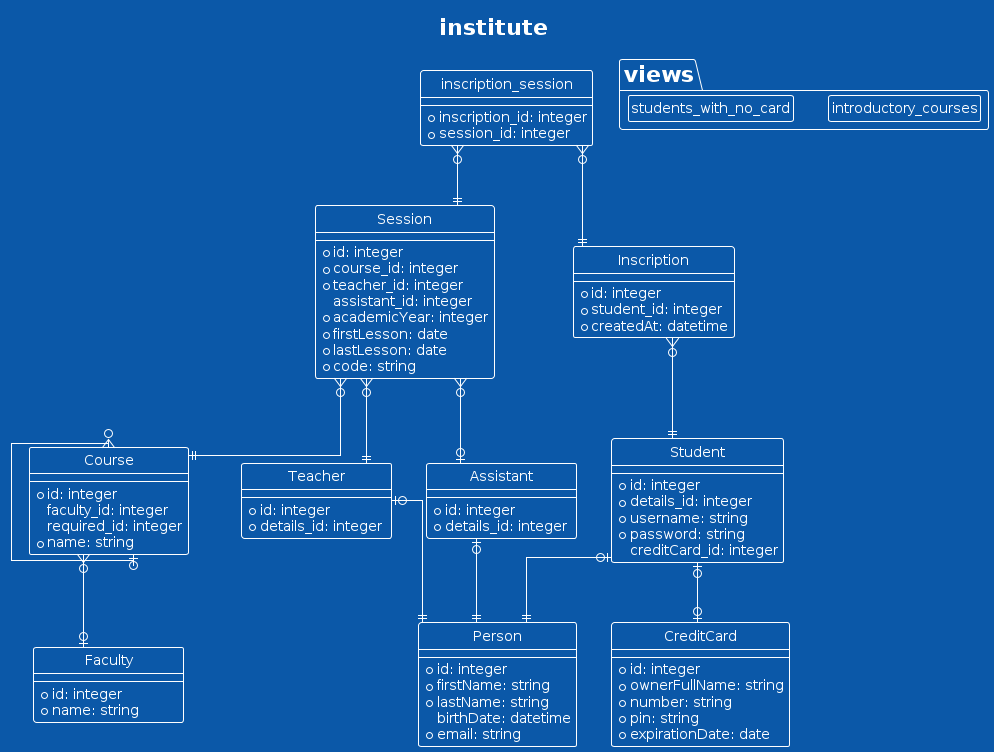
black-knight
use Jawira\DbDraw\{DbDraw, Theme};
$puml = $dbDiagram->generatePuml(DbDraw::MAXI, Theme::BLACK_KNIGHT);

bluegray
use Jawira\DbDraw\{DbDraw, Theme};
$puml = $dbDiagram->generatePuml(DbDraw::MAXI, Theme::BLUEGRAY);
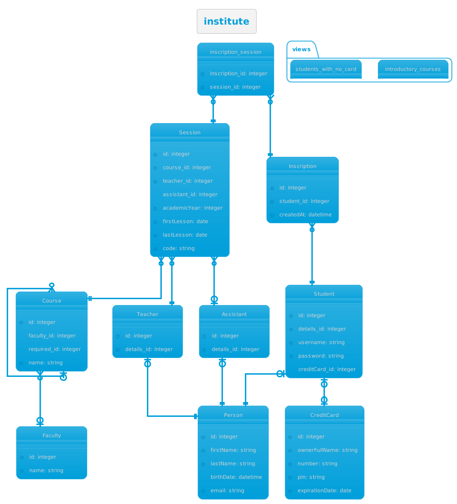
blueprint
use Jawira\DbDraw\{DbDraw, Theme};
$puml = $dbDiagram->generatePuml(DbDraw::MAXI, Theme::BLUEPRINT);
cerulean
use Jawira\DbDraw\{DbDraw, Theme};
$puml = $dbDiagram->generatePuml(DbDraw::MAXI, Theme::CERULEAN);
cerulean-outline
use Jawira\DbDraw\{DbDraw, Theme};
$puml = $dbDiagram->generatePuml(DbDraw::MAXI, Theme::CERULEAN_OUTLINE);
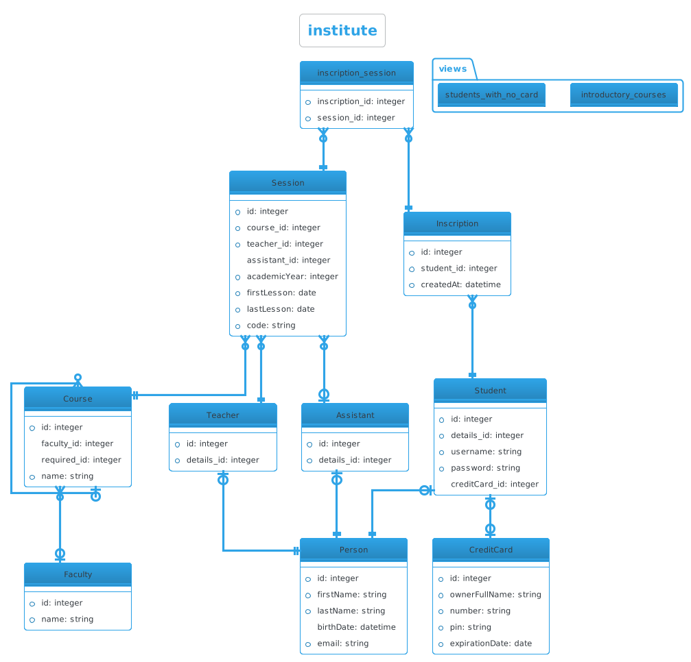
crt-amber
use Jawira\DbDraw\{DbDraw, Theme};
$puml = $dbDiagram->generatePuml(DbDraw::MAXI, Theme::CRT_AMBER);
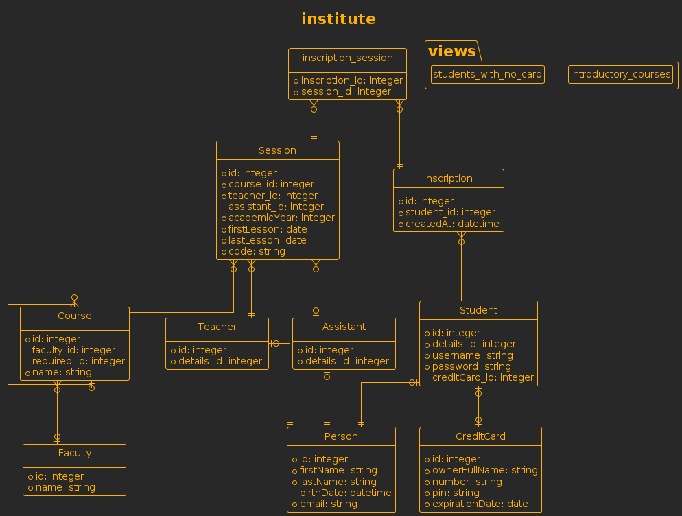
crt-green
use Jawira\DbDraw\{DbDraw, Theme};
$puml = $dbDiagram->generatePuml(DbDraw::MAXI, Theme::CRT_GREEN);
cyborg
use Jawira\DbDraw\{DbDraw, Theme};
$puml = $dbDiagram->generatePuml(DbDraw::MAXI, Theme::CYBORG);
cyborg-outline
use Jawira\DbDraw\{DbDraw, Theme};
$puml = $dbDiagram->generatePuml(DbDraw::MAXI, Theme::CYBORG_OUTLINE);
hacker
use Jawira\DbDraw\{DbDraw, Theme};
$puml = $dbDiagram->generatePuml(DbDraw::MAXI, Theme::HACKER);
lightgray
use Jawira\DbDraw\{DbDraw, Theme};
$puml = $dbDiagram->generatePuml(DbDraw::MAXI, Theme::LIGHTGRAY);
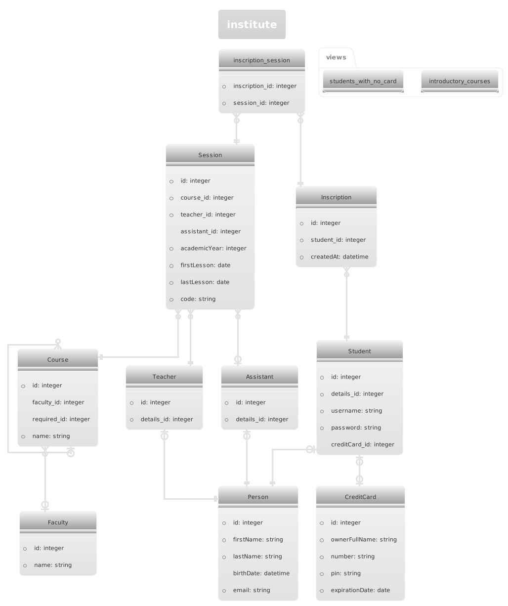
materia
use Jawira\DbDraw\{DbDraw, Theme};
$puml = $dbDiagram->generatePuml(DbDraw::MAXI, Theme::MATERIA);
materia-outline
use Jawira\DbDraw\{DbDraw, Theme};
$puml = $dbDiagram->generatePuml(DbDraw::MAXI, Theme::MATERIA_OUTLINE);
metal
use Jawira\DbDraw\{DbDraw, Theme};
$puml = $dbDiagram->generatePuml(DbDraw::MAXI, Theme::METAL);
mimeograph
use Jawira\DbDraw\{DbDraw, Theme};
$puml = $dbDiagram->generatePuml(DbDraw::MAXI, Theme::MIMEOGRAPH);
minty
use Jawira\DbDraw\{DbDraw, Theme};
$puml = $dbDiagram->generatePuml(DbDraw::MAXI, Theme::MINTY);
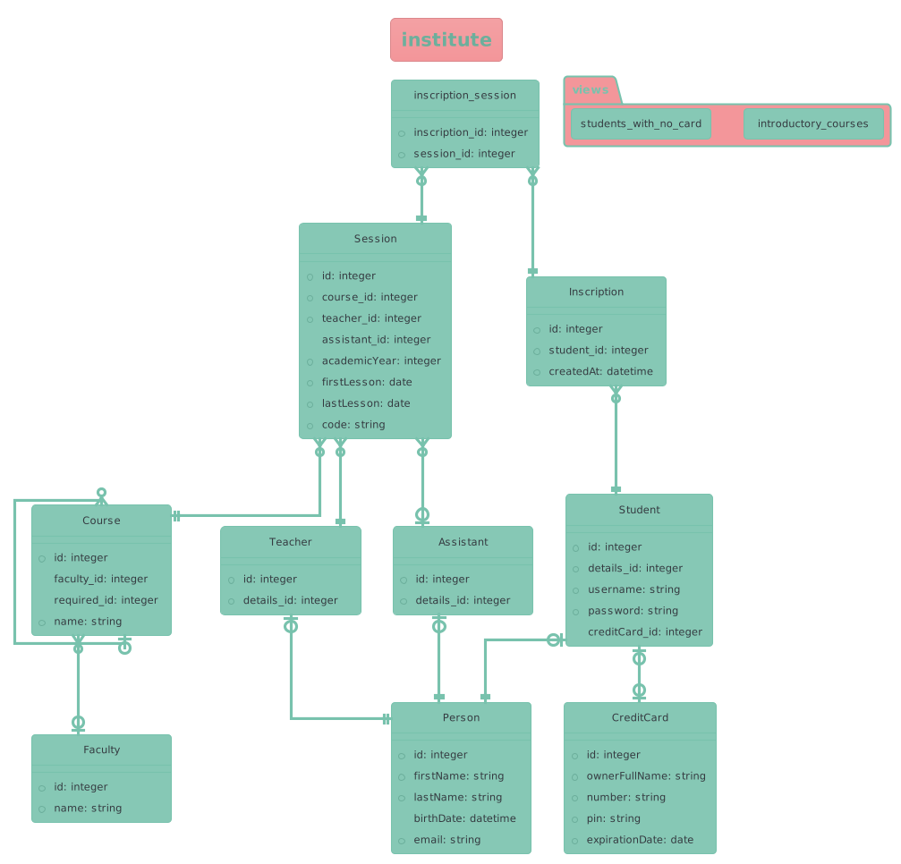
plain
use Jawira\DbDraw\{DbDraw, Theme};
$puml = $dbDiagram->generatePuml(DbDraw::MAXI, Theme::PLAIN);
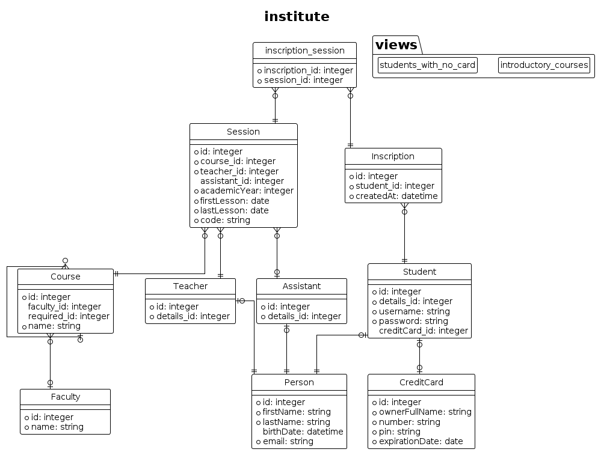
resume-light
use Jawira\DbDraw\{DbDraw, Theme};
$puml = $dbDiagram->generatePuml(DbDraw::MAXI, Theme::RESUME_LIGHT);

sandstone
use Jawira\DbDraw\{DbDraw, Theme};
$puml = $dbDiagram->generatePuml(DbDraw::MAXI, Theme::SANDSTONE);
silver
use Jawira\DbDraw\{DbDraw, Theme};
$puml = $dbDiagram->generatePuml(DbDraw::MAXI, Theme::SILVER);
sketchy
use Jawira\DbDraw\{DbDraw, Theme};
$puml = $dbDiagram->generatePuml(DbDraw::MAXI, Theme::SKETCHY);
sketchy-outline
use Jawira\DbDraw\{DbDraw, Theme};
$puml = $dbDiagram->generatePuml(DbDraw::MAXI, Theme::SKETCHY_OUTLINE);
spacelab
use Jawira\DbDraw\{DbDraw, Theme};
$puml = $dbDiagram->generatePuml(DbDraw::MAXI, Theme::SPACELAB);
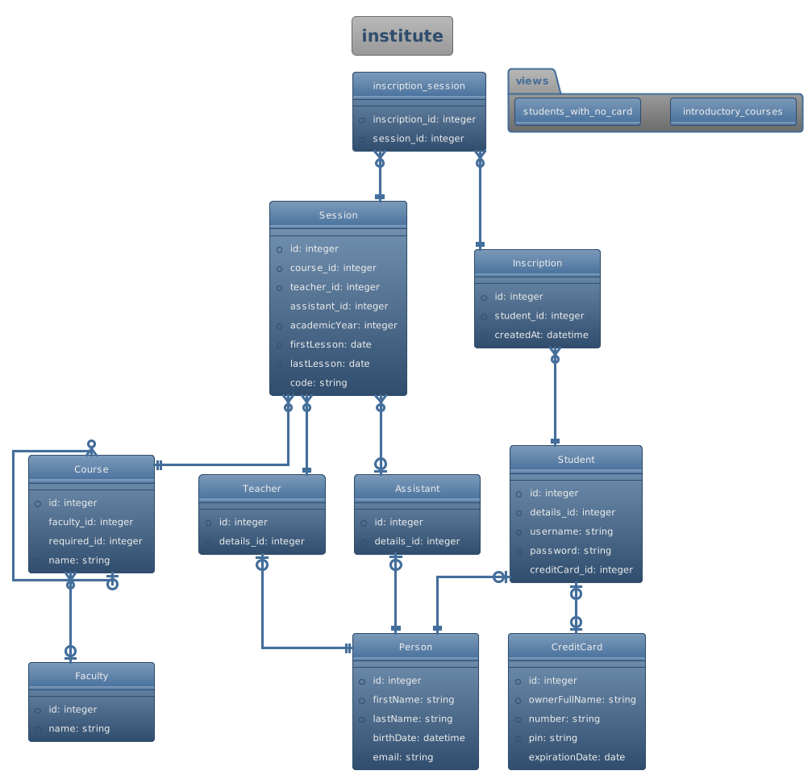
superhero
use Jawira\DbDraw\{DbDraw, Theme};
$puml = $dbDiagram->generatePuml(DbDraw::MAXI, Theme::SUPERHERO);
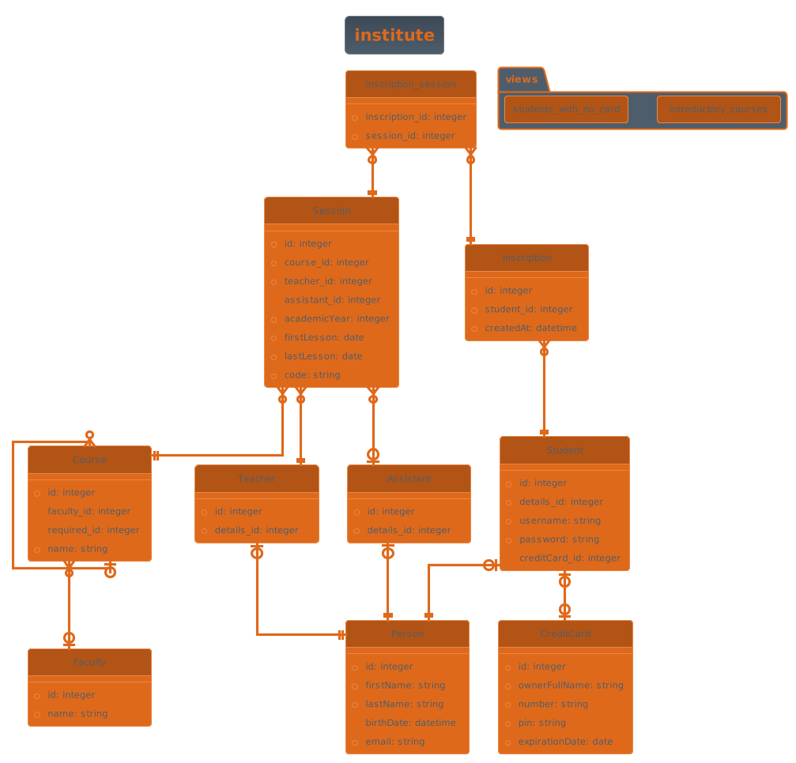
superhero-outline
use Jawira\DbDraw\{DbDraw, Theme};
$puml = $dbDiagram->generatePuml(DbDraw::MAXI, Theme::SUPERHERO_OUTLINE);
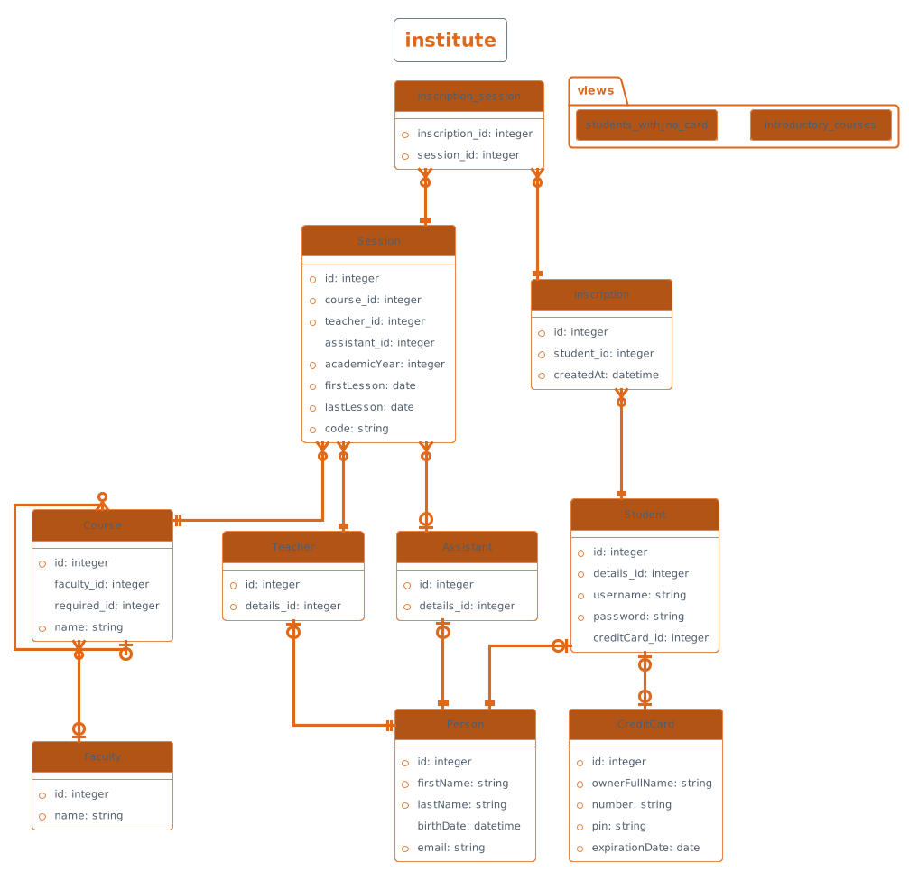
toy
use Jawira\DbDraw\{DbDraw, Theme};
$puml = $dbDiagram->generatePuml(DbDraw::MAXI, Theme::TOY);
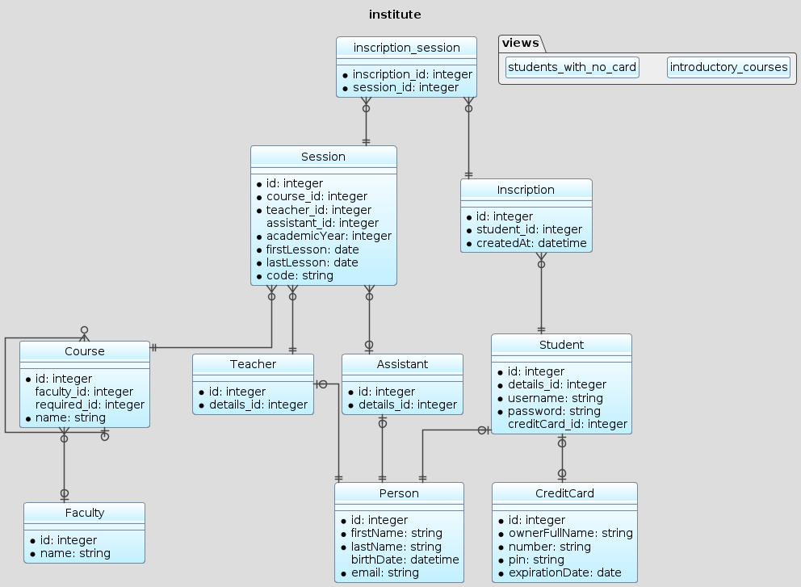
united
use Jawira\DbDraw\{DbDraw, Theme};
$puml = $dbDiagram->generatePuml(DbDraw::MAXI, Theme::UNITED);
vibrant
use Jawira\DbDraw\{DbDraw, Theme};
$puml = $dbDiagram->generatePuml(DbDraw::MAXI, Theme::VIBRANT);
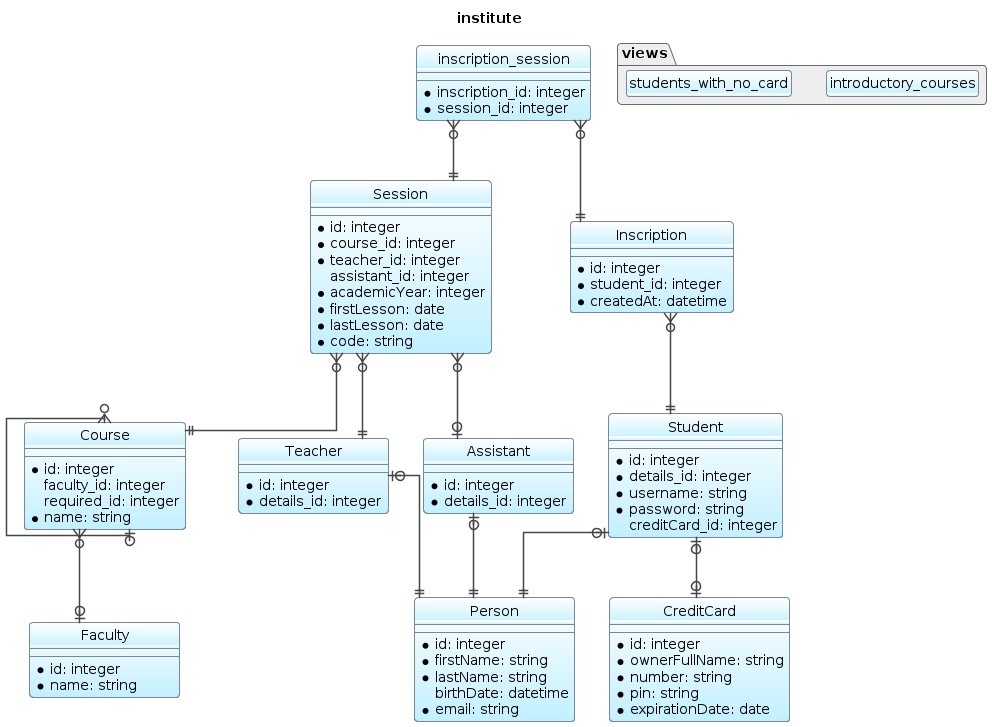